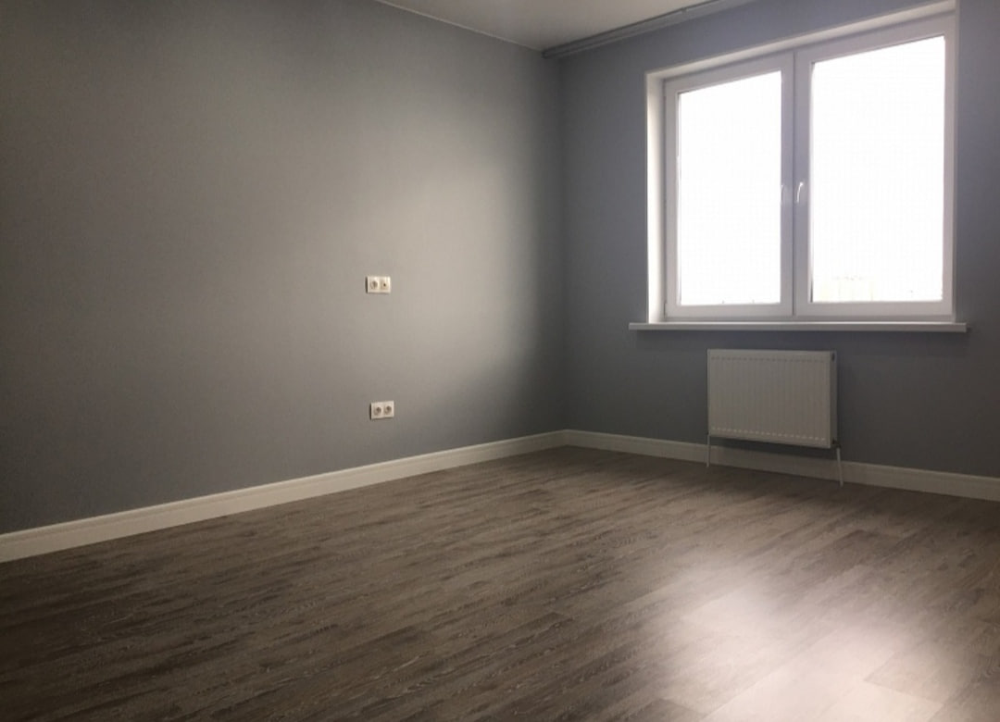

Подготовка под чистовую
Дом под ключ в комплектации белый ключ
Белый ключ — это формат для тех, кто хочет получить дом почти готовым к финальной отделке. Основные строительные и инженерные этапы уже выполнены.
- От 67 000 ₽/м²
- Под чистовую отделку
- Оптимален для быстрого финиша
Что входит в белый ключ

Чем удобен белый ключ
- Основные грязные и сложные этапы уже завершены.
- Можно быстро заходить в дизайн и чистовую отделку.
- Удобно планировать бюджет на финальные материалы отдельно.
- Подходит для заказчиков, которые хотят контролировать интерьер самостоятельно.
Что остается после белого ключа
FAQ по белому ключу
Обычно еще нет, но до готовности остается сравнительно небольшой объем чистовых работ.
Белый ключ подготавливает дом под чистовую, а золотой ключ подразумевает полную готовность к проживанию.
Да, при необходимости можно продолжить работы до формата золотой ключ.
Другие комплектации
Контакты
Если хотите получить дом почти готовым к финальной отделке, оставьте заявку на расчет белого ключа.
+7(921)618-23-77- Telegram: @CKcaizer
- Email: kaizer.sk@yandex.ru